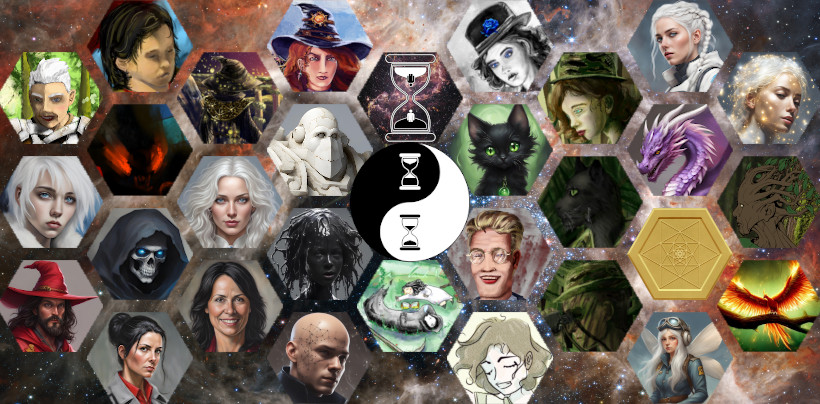

Tymely News
Work in Progress #1: Troll War #1 (June 21-28)
Eight days ago, I started work on one of my many planned novels, Troll War
For a while now, I've been thinking it might be fun to write a little something about each day's writing, as a sort of journal of my work in progress.
I'll be doing this on Mastodon for daily posts and on this blog for more in-depth information every weekend.
To start the ball rolling, I've been posting my daily updates on Mastodon all week: https://mastodon.social/@OwenTyme/112672253855096568
These are each short, normally detailing one chapter, because that's roughly my minimum average output. From time to time I may post twice in a day, if I've done things that need to be broken up.
The rest of this post will be my first weekly update.
Basics of the Setting
Troll War takes place in a galaxy not unlike our own, on a world similar to Earth, though with the addition of magic. It won't play too big a part in the novel, but there's a whole galaxy of sci-fi wonders out there, including an AI species that's consuming the resources of the galaxy to spread like a plague, but that won't become a big part of the story until book 2, AI War.
The series is titled Rumors of War.
This as yet unnamed world (the inhabitants probably call their planet some uncreative translation of the word 'dirt', just like we do) includes a variety of fantasy races. So far, I've only mentioned humans, elves, dwarves, trolls, gnomes, goblins and dark fairies (but this implies the inclusion of light fairies). The other races will likely play a part in book 3, Magic War.
As for technological level, I'm intentionally breaking with tradition and not using a medieval setting, placing the people of the various races collectively somewhat beyond the Victorian-era of technology, with a fantastic flare, but only when considered as a homogeneous people, which they most certainly are not.
Dwarves
The dwarves have advanced steam technology and metallurgy, including vehicles and trains of all kind, but have stuck by their old melee weapons, shields and armor, because the best firearms they've managed on their own are muskets, though they don't know the secret to making black powder or gunpowder, getting that from humans. Their axes do include one-shot muskets, however, in place of the ax handle.
Dwarves don't use magic directly, but their best craftsmen are somewhat mysteriously able to craft magic items and their magic is always of the best quality. They do this by starting with magical materials they've dug from the ground, such as mythril.
Humans
The humans are most advanced in firearms and the family of Lady Gunn (see below) are the principle inventors of guns. In particular, repeating pistols and rifles will play a part in battle later in the book, once things really get going.
Elves
Elves mostly eschew technology in favor of magic, but they have nothing against purchasing technological items from other races, if they find them useful. This may change over time or it may not. I'm undecided, but the local elves in the book are very much linked to the humans, since they're governed by the same king.
Trolls
Trolls are surprisingly advanced in medicine, because they have the advantage of being able to experiment with bodies that rapidly regenerate and the real truth is that their doctors (if you could call them that!) are able to produce frightening abominations of biology that would terrify even modern men, shaping the bodies of trolls until they become something new and horrifying.
It isn't uncommon for a troll to reattach severed limbs and with the assistance of another, they can reattach a severed head.
It isn't obvious to an outsider, but troll women look just like human women, aside from being exceptionally attractive, with starkly-white hair.
Troll women are all effectively witches, with a style of music-based magic unique to them. They prefer, but are not limited to mental magic, with a heavy emphasis on telepathy. Illusions come almost as easy to them.
Trolls strongly believe that might makes right. They're secretly ruled by their women, because their magic makes them believe they're superior to men and the men have never been strong enough to resist.
Notable Kingdoms
Oswil is the human/elf kingdom, to the north of the main trade road. The southern end of the kingdom is human land and the north end is elf land, though they all live under the rule of a human king.
To the southwest of Oswil is Utros, the troll kingdom, which is outwardly ruled by King Shengis, though he's actually a puppet of the troll Queen, Nepita. Utros is mostly in the mountains and the land is rich with iron.
To the southeast of Oswil is Fortune Fields, the dwarf kingdom, which is mostly a large, open plain, though there are swamps and mountains on the western edge. The land is rich with copper, iron, silver and gold.
The three kingdoms form the primary setting of Troll War.
Prologue
The majority of the prologue was written as a result of some inspiration about five months ago and on Friday of last week (the 21st), I did some clean-up work and then finished it.
This initial scene takes place in a tavern on the southern outskirts of the human kingdom of Oswil, which hosts bare knuckle matches with very few rules.
On this particular day, a human noblewoman, Lady Gunn, has been invited to join another noble, an elf wizard named Lord Rolar. Lady Gunn isn't pleased by how dirty the tavern is, but she's pleased by the fine wine her companion offers her and a match between a dwarf and a troll begins.
Dwarves are well-known for how sturdy they are, on top of being incredibly stubborn. Their fighting spirit is second to none and getting a dwarf to back down is next to impossible. This particular dwarf is used to slowly wearing his opponents down by having far greater endurance, on top of being able to punch like a fully-loaded mine cart.
Trolls, on the other hand, have the wondrous power to regenerate from most any wound, a power they use to out-last most any opponent they might face in battle. This particular troll is used to taking hits and growing back, outlasting his opponents though masochism and an incredible tolerance for pain.
Lady Gunn is soon drawn into the fight, selecting the dwarf as her choice of champion to cheer for.
The one-on-one fight rages for six hours, until the dwarf is exhausted, but still standing and the troll is on his feet, but he's begun to exhaust his body's resources useful for regeneration, starting to lose his edge though hunger.
The tiny thought I had in the back of my mind for this is that each time a troll heals, they become slightly more hungry. While they're able to recycle damaged cells and restore their bodies, there's a lasting cost in the form of a metabolic price that must be paid to activate the magic used for this.
Both combatants are at the end of their rope, breathing heavily and the troll isn't regenerating anymore, because he's too hungry. They nod to each other with mutual respect.
The dwarf asks, "Shall we end this by putting everything we've got into one last exchange?"
The troll agrees and they both abandon defense, charging each other for one, final strike! The troll dies as a result and the dwarf is briefly praised as the winner, but just as he starts a speech about his victory, he falls dead, min-sentence.
Seeing the results, Lord Rolar asks, "To the south of Oswil, we have two nations, Fortune Fields and Utros, ruled by dwarves and trolls, respectively. After this evening's spectacle, can you imagine what might happen if circumstances conspired to send them to war?"
Lady Gunn proposes they settle the question with their usual bet at stake: thirty silver pieces.
Chapter 1: Don't Kill the Messenger!
Nepita, Queen of the Trolls sits upon her throne in the great hall of Utros, surrounded by the women of her court, feeling bored.
He thoughts are interrupted by a nervous boy entering the room, carrying a message from the troll king, Shengis, claiming an elf has been captured entering the kingdom.
Nepita invited the boy to come closer and realizes she's looking at her own son, who she handed off to her mate to raise, once he was weaned. She feels a strangely sudden sense of attachment to the fourteen year old boy and grants him the title of 'Prince', similar to the way she granted her mate the title of 'King'. She orders her right-hand woman, Anji, the Weapon Master, to take the boy away for training, then orders her sister, Illa, to test the boy for magic potential, which flies in the face of tradition.
Nepita silences the resulting argument with a thunderous shout and then orders the room cleared. She may have a sentimental side, but Nepita is also unpredictable and beyond deadly. She respected by the entire court due to the way she broke every bone in her grandmother's body, to gain the throne. She's also well-known for revisiting any offense ten-fold, which is her standing international policy.
Raising her voice in song, Nepita touches the mind of her mate, Shengis, that she might use him like a puppet.
Through his eyes, she observes the elf prisoner, who explains his presence by offering up a journal taken from an ill-fated party of dwarves that had been on a spying mission inside troll lands.
It is hinted, but not spelled out that this elf is Lord Rolar, last seenin the prologue.
Nepita speed-reads the journal and is both furious with the dwarves and eager for war, because it will interrupt her boredom.
Disconnecting her mind from Shengis, she calls Anji back into the room, giving orders for the coming conflict.
Chapter 2: Disturbing the Peace
King Gorgo Windmaker, the Tenth, King of the kingdom of Fortune Fields, receives a guest.
Lady Gunn hands over a journal she claims was captured from trolls, which details their spying operation and observations of the dwarf kingdom.
King Windmaker values his profitable business relationship and even friendship with the trolls, despite their obvious differences, but he can't ignore the journal, so he sends his son, Prince Kadrek, as an envoy to Utros, to seek a peaceful conclusion to the conflict.
The price has an eerie journey up the canyon leading to the palace of Utros, until he hears singing that absolutely entrances him, drawing him every forward, until he lays eyes on four troll women. He stares at them in a trace as his men are slaughtered, but just as he's about to be killed, their leader, Anji, recognizes him, having sen the Prince though her mate's eyes.
She orders the prince stripped, shaved and his memory of troll women wiped, then sends him on ahead, for interrogation. The Prince is put to sleep by a magic lullaby.
Chapter 3: Declaration of War
When Kadrek wakes, he faces Shengis and Nepita looks on him through her mate's eyes.
He explains his presence and begs for peace, but neither of the troll rulers believes him, thinking his father sent him under false pretenses.
They hear him out, then give him an ultimatum to deliver, before giving him the night to rest, because eh it's a long, naked, barefoot run back to the palace of Fortune Fields, which he should make sure he hurries to complete, because he has limited time to warn his father before two more villages are destroyed (he's informed of the plan to destroy Flintbrook; see next paragraph).
While the prince sleeps, Anji and her army arrive at the smallest dwarf village along the border to Utros, Flintbrook. They slaughter every dwarf they find, not even sparing the children, and arrange the bodies to spell out a horrifying message: THE PRICE IS TEN-FOLD! They leave no stone of the village standing on another, using bursts of magic to level every structure they find.
At dawn, the prince is released and he runs the entire way, leaving his feet a bleeding mess. He collapses in the throne room and tells his father he must immediately respond with his acceptance of the destruction of Flintbrook or be prepared to lose Withermine and Razorpoint Refuge, followed by all-out war.
Last of all, he warns his father the soldiers should plug their ears and not listen to the singing, before he passes out.
Chapter 4: War Machine
Furious, King Windmaker shouts, "By Nobris, ye don't shave a dwarf's beard!"
Here's a helpful quote from what I've written, to explain:
Nobris was the god of dwarves, industry and beards, who was widely believed to have gifted the dwarf race with their talent for mining and crafting. According to legend, he’d also given them their beards, which grew thicker and longer than the hair of women. To a dwarf, their very beard was a sacred, god-given gift and shaving it off was said to be an affront to Nobris, whom they praised more than any other god. In short, the trolls hadn’t just shamed the prince, but they’d also insulted Nobris.
Kadrek is carried off by the healers, while the King erupts in orders to prepare his kingdom for war. In particular, he orders his war-riders gathered at the west gate, then makes his way to the back of a statue set behind his throne, climbing a ladder to the platform, which allows access to the interior of the statue, which is filled with buttons, levers and other controls. He opens the shutters covering the windshield of the definitely-not-a-statue, allowing more light in, then shuts the back hatch.
He activates the steam engine in the belly of his war-rider, which is actually a huge, steam-powered mech shaped like a giant dwarf armed with an ax and shield. Likewise, the war-riders occupied by his royal guardsmen come to life and they march down the hall, though a huge pair of brass-shod doors.
They emerge on the main street of the royal city and every dwarf witnesses the huge machines in motion, coming to the same conclusion: the kingdom is at war. The workers on their way home from work turn around to volunteer for another shift, while the busy streets are soon cleared, as every man, woman and child among the dwarves sets out to contribute to the war effort, as one lone street vendor, who used to be a royal guardsman sheds a tear for the looming future and the loss of peace, likely with the only joy being the joy of fighting.
Chapter 5: Bloody Razor
I didn't get very far on this chapter, doing little more than writing descriptions as King Windmaker's war-riders gather, then set out, one two companies off to Withermine, while he takes another two off to Razorpoint Refuge.
Razonpoint Refuge is a fort built at the deepest portion of a crescent-shaped mountain named Razorpoint Ridge. The interior of Razorpoint Ridge faces into Fortune Fields and is topped with razor-sharp obsidian, while the prevailing wind blows right into it. The top is high enough that it touches and shaves the bottom off of clouds, causing the land beneath to often fill with fog, incidentally watering the crops for the dwarves living there.
Not only is it fruitful land, but also extremely defensible, so the King's father built a fort there, using the excuse of defending the nearby trade road, to the north, to justify putting a fort so close to troll lands.
King Windmaker splits his force in two, placing them near each tip of the crescent, that they might use a pincer attack when the trolls inevitably come.
Depite the fact backup is on the way, the King worries: Razorpoint Refuge is an impenetrable fortress, impossible to take by force, and yet, the trolls openly declared it as one of their first targets in the war, as if it were a place of weakness. He can't help but wonder what they know that he doesn't.
The answer will become clear on Monday, when I resume writing, but I'm leaning toward it being a matter of troll women and their magic. On the other hand, the trolls have no idea the dwarven war-riders even exist, so it should be a really fun opening battle for the war, with unexpected outcomes on both sides. However, unless I change the chapter title, the battle is going to be bloody.
Tags: writing, work-in-progress, rumors-of-war